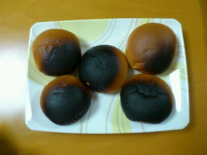

少し前のせいらりんの
朝ご飯です・ω・♪...............

(・・;)
こげパンぢゃwwww(*^^*)笑
みごとにトースターさんの中に
入れ過ぎたね(ω)))
せいらりんりん♪))
ってことで今日さっそく
質問返ししていきすね^^
★3/16で16才になりました。お祝いしてくれる？
☆16才ってことはまひろと一緒だね^^
おめでとう〃^ω^〃
★センターわけ挑戦したことある？
☆ずっと少し左わけですω))
★ボンチアラレ知ってるよなぁ？
☆あww 懐かしい♪
よく 食べてたあω
めっちゃ好きです。
★野球好きですか？好きなチームとかあるん？
☆あまり詳しくはないんですけど、
一応大阪人なんで阪神の試合を
見に行ったことがあります^ω^
あと、中学の夏休みの時
友達と甲子園に行って暑すぎて
倒れそうになった思い出が...><
★チーム内でユニットを組むことになりました。誰とどんなユニット？(大喜利風で)
☆大喜利風かぁ〜(⌒‐⌒)
まりかと〜、
いやっ、 かずみん？まあや？
あww むちゃ考えたけど、
全然おもろいのん思いうかばーん(>_<)
ごめんなさいっ(*ω・*)
★東京暮らしなれた？
☆なれたっ・ω・♪
★3/5今日からろってぃー推しなっても良いですか？
☆はいっ(〃ω〃)
まひろでよければω
ありがとうございます♪
★3/11、サッカーの試合やし
応援してくれるよね？
☆コメント読んだ時、ちゃんと応援したよーう^ω^!
どうだった？
★バスケ好き？
☆中学の頃、体育の授業だったら
バスケが好きでした♪
いっぱい動けるから^^
でもねっ、ハードルに関しては
『まひろ学年で一番上手いわ!!』
って体育の先生にほめられたのω
ワーイ。
★いつもレッスンしてるスタジオってそんな大きいの？
☆そんな大きくないけど
何周も何周も走ってたら
汗かきます^^
普通のレッスンスタジオと同じ位の大きさ♪
だからいつもキチキチで
練習しています^ω^
★友人と接する上で大切にしてることはなんですか？
☆友達のいい所を探り出すこと(*^^*)笑
★まひろっぴーの好きな言葉おしえて。
☆love and peace